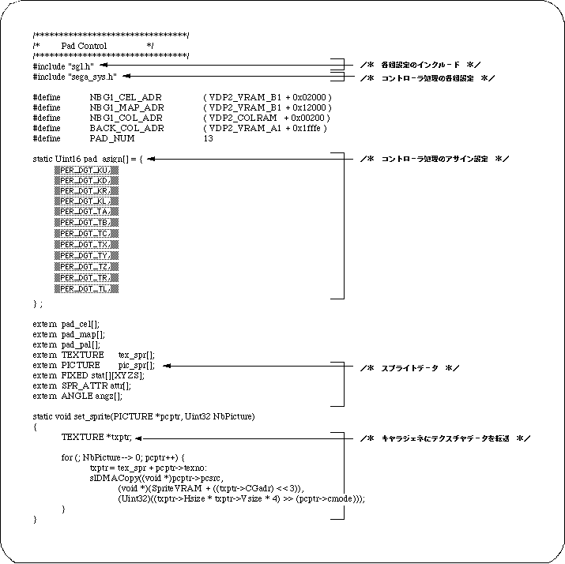
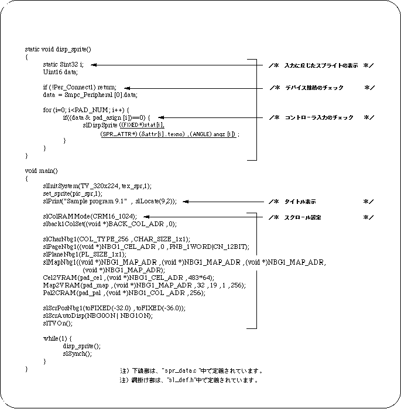
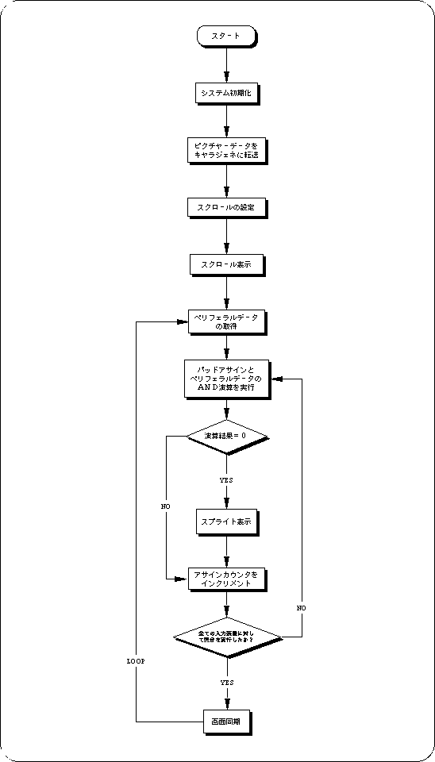

Return to previous page | Return to menu | Go to next page
The sample program (Listing 9-1) was created for testing the controller input.
The program displays a graphic simulating Saturn PAD on the screen, and if there is a controller input, an instruction mark (finger shape) is displayed on the button at the position corresponding to the controller input.
In this program, sprites are used for instruction marks.


